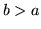

In [Good 1953]14.13a method of discounting maximum likelihood estimates was proposed
whereby the count of an event occuring times is discounted with
A problem with this scheme, referred to as Good-Turing discounting,
is that due to the count in the denominator it will fail if there is a
case where if there is any count for
. Inevitably as increases the count  will tend towards
zero and for high there are likely to be many such zero counts. A
solution to this problem was proposed in
[Katz 1987], which defines a cut-off value at which counts
for are not discounted14.14 - this is justified by
considering these more frequently observed counts as reliable and
therefore not needing to be discounted. Katz then describes a revised
discount equation which preserves the same amount of mass for the
unseen events:
will tend towards
zero and for high there are likely to be many such zero counts. A
solution to this problem was proposed in
[Katz 1987], which defines a cut-off value at which counts
for are not discounted14.14 - this is justified by
considering these more frequently observed counts as reliable and
therefore not needing to be discounted. Katz then describes a revised
discount equation which preserves the same amount of mass for the
unseen events:
This method is itself unstable, however - for example if
then will be negative for
.
Back to HTK site
See front page for HTK Authors